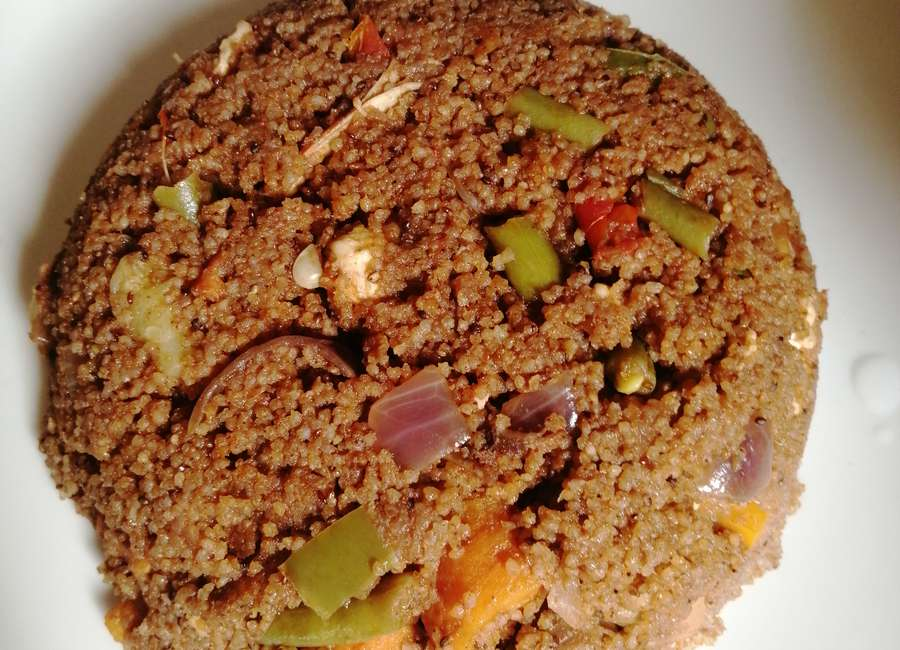
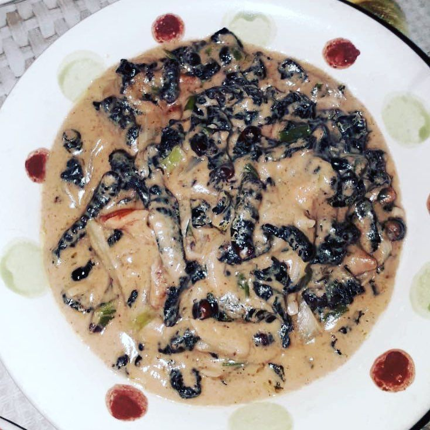

Faso Ri Nondo
Accueil
Les recettes
Soumettre une recette
LES METS DE LA REGION DES HAUTS BASSINS

X
Nom :Couscous de fonio au haricot
Recettes :
250 g de fonio cru
500 g de haricot cru
1 cuillérée a soupe de sel iode
1 cuillérée a cafe de potasse
1/4 de litre d’huile

X
Nom :Soupe de chenilles
Recettes :
100 g de pa te de pistache crue
200 g de chenille de karite
3 bulbes d’oignons frais
4 tomates fraî ches
10 g de poudre de soumbala
Poivre noir séchée
1/2 cuille re e a cafe de sel iodé
1 cuille re e a soupe d’huile